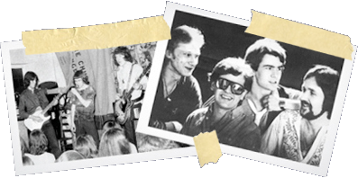

About Nik
Born Nicholas David Kershaw on 1st March 1958 in Bristol, England.
Spent his early years gurgling and blowing snot bubbles.
In 1959 he moved to Ipswich where he was to live for the next twenty years. Educated (educated?!) at Morland Road Primary School and Northgate Grammar School for Boys. School honours included 25 yard Breastroke Certificate, 5th year pole vault champion and the 1975 Barney Rubble commemorative award for under achieving (with honours).
Kershaw's early penchant for showing off was indulged at the Co-op drama group. Indeed, people still speak in hushed and reverent tones of his Tweedledum!
It was at Northgate that he met Russell Chesterman. He had a Gibson 335 (copy) and wasn't afraid to use it. Sunday afternoons would never be the same again, throwing shapes to Black Sabbath and Deep Purple whilst Russell's mum made light refreshments. It was here that Kershaw was first introduced to the shady underworld of lime cordial and fish paste sandwiches.
In August 1974 at Rushmere village hall, the mighty "Thor" was unleashed upon an unsuspecting public. Nik on guitar and vocals, and Russell on bass and headband were augmented by Roger Waters on drums and Nig Cook on guitar. Classics such as Bowie's "Gene Jeanie" and Slade's "Look wot you dun" were stripped naked, thrashed to within an inch of their lives and dragged, kicking and screaming, through a bewildering assortment of fuzz boxes and flangers. They didn't stand a chance.
The reception was mixed. Admittedly, there were a few who thought they were crap but by far, the majority view was that they were really crap. Bruised but strangely encouraged, Kershaw employed the services of drummer Kim Williamson and changed the name of the band to "Half Pint Hogg".
He left school in 1975 (halfway through taking his "A" levels) in order to concentrate on his music career. To this end, he secured a job in Ipswich Unemployment Benefit Office. By day he was mild mannered clerical officer Nick Kershaw, by night he wore loon pants and tie dyed batwing shirts. The "Half Pint" was dropped and "Hogg" was born.
Every Thursday evening for the next three years Hogg honed their skills at Claydon cement works. The schedule was punishing and not everybody was to make it through. Cook and Chesterman fell by the wayside and were replaced by Paul Hart and Roy Little.
The gigs came thin and slow but this didn't discourage Kershaw and soon Hogg had attracted a small following. Fortunately, they managed to shake them off by hiding in a skip.
Read more